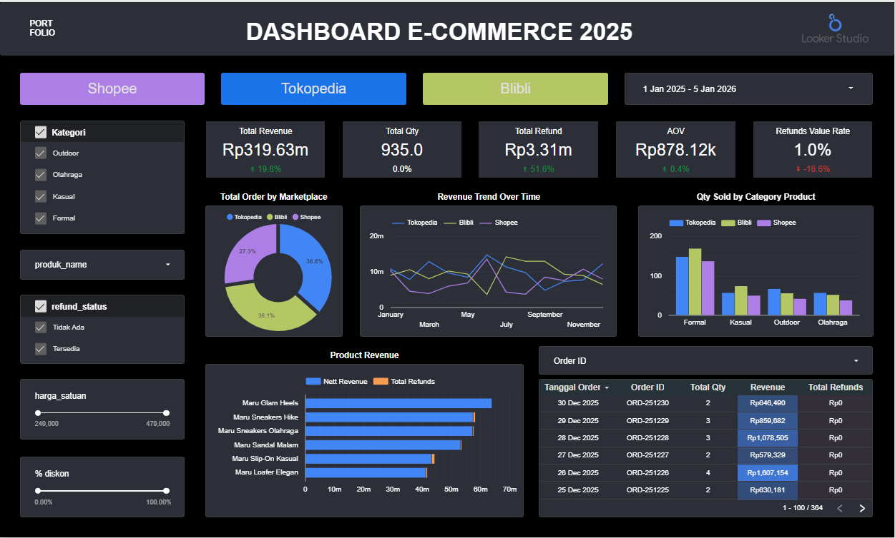
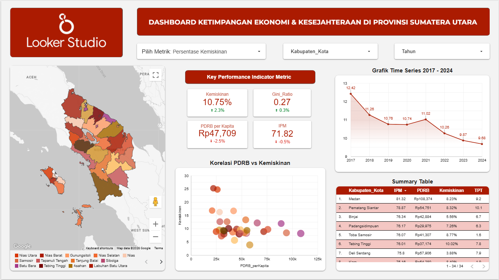
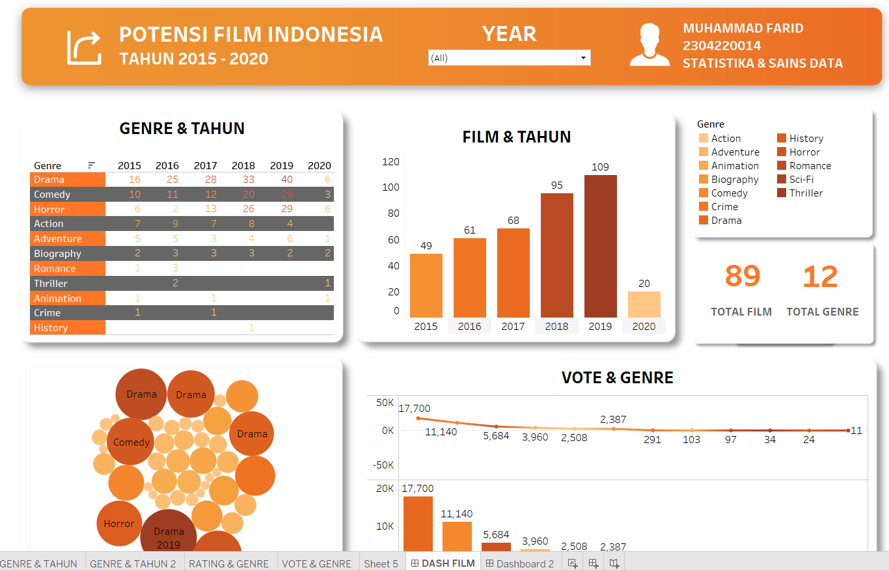
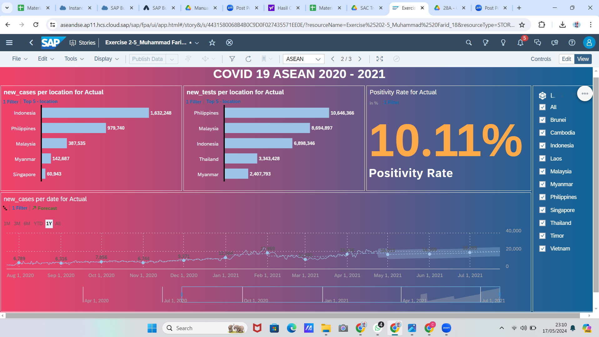
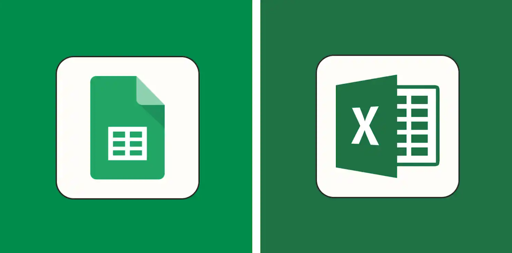
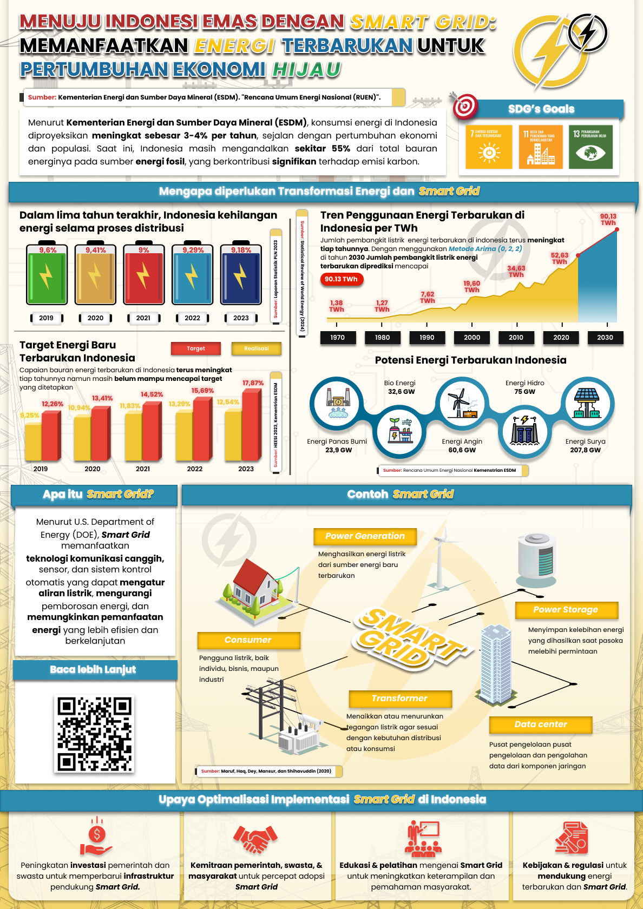
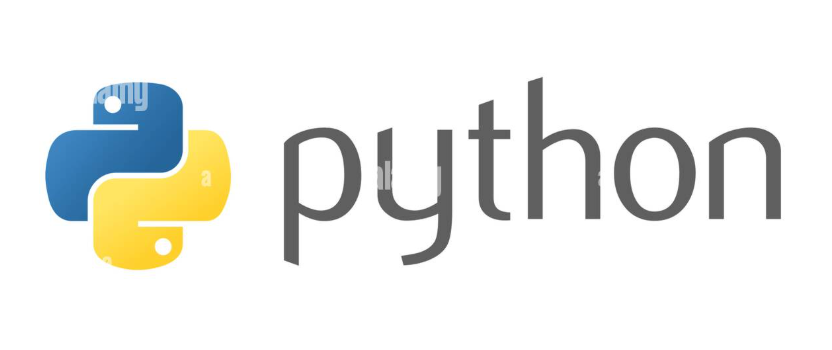
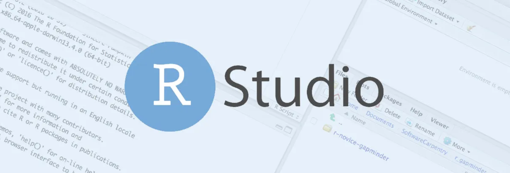

Data Projects
Kumpulan proyek data science dan visualisasi yang menampilkan kemampuan analisis, pemrograman, dan interpretasi data.

DASHBOARD | E-Commerce Multi-Channel Performance Dashboard 2025
Proyek ini merupakan dashboard interaktif yang dirancang untuk memantau performa bisnis dari tiga marketplace utama di Indonesia: Shopee, Tokopedia, dan Blibli.
Looker Studio
Google Sheets
Data Cleaning
Trend Analysis
Data Visualization
Dashboard Design
Interactive UI

DASHBOARD | Ketimpangan Ekonomi & Kesejahteraan di Provinsi Sumatera Utara 2017 - 2024
Dashboard ini bertujuan untuk memetakan distribusi kesejahteraan dan ketimpangan ekonomi di berbagai Kabupaten/Kota di Provinsi Sumatera Utara.
Looker Studio
Google Sheets
Data Cleaning
Socio-Economic Analysis
Data Visualization
Dashboard Design
Interactive UI
Time Series Analysis

DASHBOARD | Kesehatan Mental dan Kepuasan Kerja di Bidang Medis
Dashboard ini dirancang untuk menganalisis kondisi kesehatan mental dan tingkat kepuasan kerja dari 5.000 karyawan di berbagai bidang medis.
Google Sheets
Data Cleaning
PivotTable
PivotChart
Data Visualization
Dashboard Design
Interactive UI

DASHBOARD | Performa Penjualan Warmindo
Dashboard ini bertujuan untuk memantau performa penjualan harian dan bulanan dari sebuah bisnis kuliner (Warmindo).
Looker Studio
Google Sheets
Data Cleaning
Sales Analysis
Data Visualization

DASHBOARD | Potensi Film Indonesia
Dashboard ini memberikan gambaran komprehensif mengenai peta industri film di Indonesia selama periode lima tahun.
Tableau
Excel
Data Cleaning
Trend Analysis
Data Visualization

COVID-19 ASEAN (2020 - 2021)
Dashboard ini menyajikan analisis data kesehatan publik terkait pandemi COVID-19 di wilayah ASEAN.
SAP Analytics Cloud (SAC)
Spreadsheets
Data Visualization

DASHBOARD | Ketimpangan Ekonomi & Kesejahteraan di Provinsi Sumatera Utara 2017 - 2024
Dashboard ini bertujuan untuk memetakan distribusi kesejahteraan dan ketimpangan ekonomi di berbagai Kabupaten/Kota di Provinsi Sumatera Utara.
Tableau
Excel
Data Cleaning
Socio-Economic Analysis
Data Visualization
Dashboard Design
Interactive UI

EXCEL / SPREADSHEET | Visualisasi Dashboard Kesehatan Mental dan Kepuasan Kerja di Bidang Medis
Data Cleaning
PivotTable
PivotChart
Data Visualization
Dashboard Design
Interactive UI
EXCEL / SPREADSHEET | Studi Kasus Menggunakan fungsi VLOOKUP dan HLOOKUP
Statistical Analysis
VLOOKUP
HLOOKUP
IF ELSE
Data Validation
Reporting Automation
EXCEL / SPREADSHEET | Studi Kasus Analisis Kinerja dan Demografi Karyawan menggunakan PIVOT TABLE
Pivot Tables
Visualiasi Data
Pivot Charts
Cross-Tabulation
Data Grouping
Summary Statistics
EXCEL / SPREADSHEET | Studi Kasus Menggunakan fungsi LEFT-MID-RIGHT VLOOKUP dan HLOOKUP
LEFT-MID-RIGHT
VLOOKUP
HLOOKUP
IF ELSE
Data Validation
Reporting Automation
EXCEL / SPREADSHEET | Studi Kasus Pembandingan Pasar Smartphone & Analisis Harga-Kinerja menggunakan PIVOT TABLE
Pivot Tables
Visualiasi Data
Pivot Charts
Cross-Tabulation
Data Grouping
Summary Statistics

INFOGRAFIS STATISTIK | Transformasi Pendidikan melalui Digitalisasi - Solusi Berkelanjutan untuk Akses Berkualitas & Merata
Proyek ini menganalisis peran krusial digitalisasi dalam memperbaiki sistem pendidikan di Indonesia. Fokus utamanya adalah bagaimana teknologi seperti AI, AR/VR, dan E-learning dapat mengatasi ketimpangan kualitas pendidikan antardaerah dan menyiapkan generasi muda menghadapi Era Society 5.0.
.png)
INFOGRAFIS STATISTIK | Nature-Based Solution - Aksi Hijau Perangi Emisi Gas Rumah Kaca
Infografis ini menyajikan analisis data mengenai ancaman emisi Gas Rumah Kaca (GRK) di Indonesia dan bagaimana solusi berbasis alam (Nature-based Solution) dapat menjadi strategi berkelanjutan untuk mitigasi pemanasan global. Karya ini menggabungkan data proyeksi emisi historis hingga tahun 2030 dengan analisis sektor penyumbang emisi terbesar.

INFOGRAFIS STATISTIK | Menuju Indonesia Emas dengan Smart Grid - Optimalisasi Energi Terbarukan
Proyek ini menganalisis urgensi transformasi energi di Indonesia dari sumber fosil ke energi terbarukan melalui teknologi Smart Grid. Fokus utamanya adalah memetakan potensienergi hijau nasional, menganalisis efisiensi distribusi, serta melakukan peramalan kebutuhan energi masa depan untuk mendukung pertumbuhan ekonomi yang berkelanjutan.
.png)
INFOGRAFIS STATISTIK | Smart Agroforestry - Strategi Adaptasi Perubahan Iklim
Proyek ini adalah infografis analitis yang disusun untuk mengomunikasikan urgensi perubahan iklim terhadap ketahanan pangan di Indonesia. Infografis ini menggabungkan data cuaca ekstrem, anomali suhu, dan analisis sentimen publik untuk menawarkan solusi berbasis teknologi Smart Agroforestry.
.png)
INFOGRAFIS STATISTIK | Menuju Indonesia Emas 2045 - Membangun Pendidikan Berkualitas
Infografis ini disusun untuk menganalisis kondisi pendidikan di Indonesia saat ini sebagai fondasi menuju visi Indonesia Emas 2045. Fokus utamanya adalah mengevaluasi kualitas literasi, numerasi, serta korelasi investasi pendidikan terhadap pertumbuhan ekonomi dan tingkat pengangguran.

INFOGRAFIS STATISTIK | Artificial Intelligence (AI) Learning Solutions Digital Era 5.0
Proyek ini mengeksplorasi fenomena adopsi Artificial Intelligence (AI) dalam sektor pendidikan secara global. Fokus utamanya adalah menganalisis statistik penggunaan AI di kalangan pelajar dan akademisi, pemetaan strategi AI nasional di berbagai negara, serta evaluasi dampak etis dan kesenjangan teknologi yang muncul seiring dengan pesatnya perkembangan teknologi ini.

PYTHON | Klasifikasi Indeks Kesehatan (Prediksi BMI) Menggunakan Algoritma Machine Learning Descision Tree
PYTHON | Analisis Pembelian Pelanggan & Prediksi Penjualan menggunakan K-Nearest Neighbors (KNN)
PYTHON | Data Cleaning & Preprocessing
PYTHON | Prediksi Kelangsungan Hidup Titanic Menggunakan Random Forest Ensemble Learning
PYTHON | Analisis Data Eksplorasi & Visualisasi Statistik untuk Wawasan Pasar
PYTHON | Program Web Scraper Otomatis untuk Data Katalog Buku Global
PYTHON | Analisis Keranjang Belanja menggunakan Association Rules (Apriori Algorithm)

R | Statistika Deskriptif dan Visualisasi Data
R | Analisis Regresi untuk Data Lingkungan
R | Bootstrap dalam Regresi & Estimasi Missing Value
R | Menguji Keakuratan Estimasi Sampel Menggunakan Metode Bootstrap
R | Simulasi Data Menggunakan Metode Monte Carlo
R | Simulasi Sederhana: Variabel Random Uniform
R | Estimasi Distribusi dan Parameter Model
R | Analisi Time Series, Prediksi Inflasi di Jawa Tengah Menggunakan ARIMA
R | Skenario Membangiktkan Data

SQL | Proses sedang di Rekap
SQL | Proses sedang di Rekap